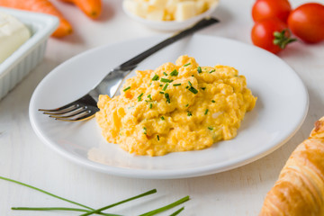
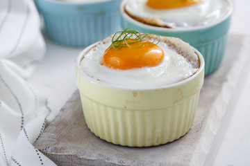

Poaching Method
Poaching means to cook something in a liquid, mostly water, at a temperature between 65 and 75°C. However, that doesn't always need to be the case and you will see what I mean in a minute.
Poached Eggs

Poached eggs are a beautiful and tasty way of cooking eggs. The eggwhites solidify, forming a sort of layer for the yolk to stay runny.
| What to Do | Why to do it | Information |
|---|---|---|
| You will need 2 bowls, one to crack the eggs in, one to keep them in. Crack the Eggs in one bowl one by one, without damaging the yolk. | In case one of the yolks gets damaged, you can still use it for another dish. | Use eggs as fresh as possible. The older the egg the more likely it is to not hold together, even with the vinegar water. Poached eggs are amazing served on toast, spinach or on rice with a little bit of buttersauce, currysauce or any sauce of your liking. |
| You will need vinegar water, 1 dl vinegar per liter of water. Heat up the water until before the boiling point. | The vinegar's acidity has the role of keeping the eggwhites togheter the moment we put them in the water. Don't salt the water, as it has the opposite effect. | |
| Carefully place the eggs in the water and poach them for about 3 Minutes. | The whites need to be solid, while the yolk remains liquidy. | |
| Take the eggs out and cut off the stringy bits. Dip them in hot saltwater for just a second and dry them with a papertowel. | The vinegar water gets cleaned off. |
Scrambled Eggs
Yep scrambled eggs are poached. They are one of the exceptions to the rule, because you don't poach them in a liquid, but because of the low temperature used and the fact that, well, the mass is liquid, you call it poaching.
| What to Do | Why to do it | Information |
|---|---|---|
| Crack the eggs in a bowl, whisk them really well, strain them and season them. | If you don't whisk the eggs enough, you will have white strips in your scrabled eggs. Strain them, in case of eggshels falling in the mass. | I like to not salt the eggs too much when i cook for somebody else as well, because everyone has diffent preferenced when it comes to the taste of salt on eggs. |
| Heat some butter in a pan and sear any pre-cooked inlay you want. I like bacon, mushrooms, shallots and tomatoes. Dill is also a very good herb for scrabled eggs. | ||
| Add the eggs and cook on low heat, while stirring regularly. | So that you get a fluffy, creamy composition, the eggs need to be poached on low heat and stirred. | |
| Add cream or milk. | So that the poaching process stops and to refine the mass. |
Eggs In The Potty
This is one of my favourites. But i have to say I don't always have the patience to make the dish. As any other egg dish, it's really good for breakfast or brunch.
| What to Do | Why to do it | Information |
|---|---|---|
| Butter the cocottes and any inlay you want. I like asparagus tips, chicken breast or, of course, bacon. If you don't have cocottes, you can use any heat resistant kitchendish you have. Porcelain dishes, for example. | Buttering the cocottes keeps the eggs and inlay from sticking. | Depending on your oven and how you like the eggs, you can play a bit with the time. You don't have to cover them, but if you don't, i would suggest to put a bowl of boiling water at the bottom of the over, so that the eggs are firm at the top. |
| Separate the eggwhites and yolks, without damaging the yolks and whisk the eggwhites one by one. | So that you have one egg per cocotte. | |
| Put one eggwhite in the cocotte and place the yolk in the middle. Season the eggwhites and place a little bit of butter on top. | We don't salt the yolks, because salt makes them have white points. | |
| Cover them and poach them in the oven at 75°C for about 10 Minutes. | ||
| When the eggs are done, cover the whites with sauce. I like to use a butter sauce or a herb cream sauce. | We cover only the whites, so that the yolks are visible and stay runny. |